# create a vector of real numbers
x <- seq(-10, 10, by=0.1)
plot(x ~ seq(-10, 10, by=0.1))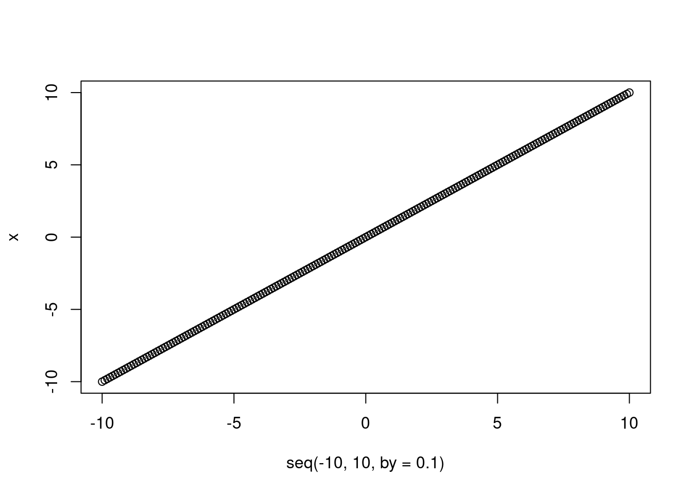
# plot it with the logit link
plot(plogis(x) ~ x)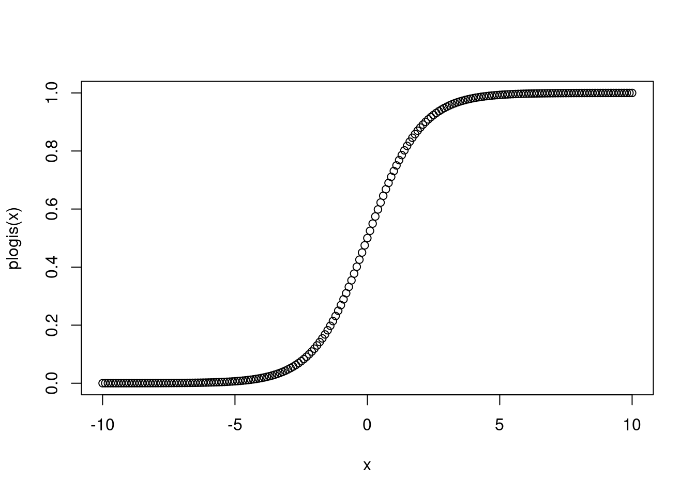
Remember that the linear models we have been running so far have some assumptions:
In ecology, one of the assumptions we often fail to meet is that the errors are normally distributed. Instead of assuming normality when it is rarely the case, we can instead use a more flexible model with is the generalized linear model. In addition to the deterministic and stochastic components present in a general linear model, a generalized linear model also has a link function. This link function translates between the structure of our observed data and model estimates so that effects are additive on some scale. Note that this is different from transforming our predictor variables (e.g., how we used the square root of bison age as a predictor of weight, rather than age itself). Instead, we are translating the model predictions to match the structure of the response variable.

Let’s revisit the example of guillemot chicks jumping from the cliff to the ocean. Earlier this semester, we only looked at the probability of success, and all individuals had the same probability of making it. i.e. the model we fit was what is displayed below, where the only value we are concerned with estimating is the intercept (i.e. the mean value)
\[y \sim Bern(p)\\ p = 0.4\]
If we had additional information about each individual guillemot chick, we might want to model the probability of success as a function of that information. For instance, perhaps birds with longer wings have a higher likelihood of success. Now each individual chick \(i\) can have its own estimated probability of success based on its wing size \(x_i\).
\[y_i \sim Bern(p_i)\\ p_i = \beta_0 + \beta_1*x_i\]
This is not quite right, however, because we know that probability can only be between 0 and 1. So we need to put some constraints on the value that \(p_i\) can take. We do this with the logit link function. The logit function takes all real numbers, \(-\infty\) to \(+\infty\) and maps them on to the range from 0 to 1, but never actually reaches 0 or 1.
\[y_i \sim Bern(p_i)\\ \text{logit}(p_i) = \beta_0 + \beta_1*x_i\]
# create a vector of real numbers
x <- seq(-10, 10, by=0.1)
plot(x ~ seq(-10, 10, by=0.1))
# plot it with the logit link
plot(plogis(x) ~ x)
By using the logit link, we can only ever get probabilities between 0 and 1, which means that we will be able to draw from the Bernoulli distribution to get successes of 0 or 1 for each guillemot depending on their probability of survival. Let’s first simulate a dataset.
set.seed(88)
# define an intercept
b0 <- 0.4
# for every one unit increase in wing length, increase pro
b1 <- 2.2
# number of chicks
n.obs <- 88
wing <- rnorm(n.obs)
p <- plogis(b0 + b1*wing)
y <- rbinom(n.obs, 1, p)
# visualize our simulated data
plot(y ~ wing)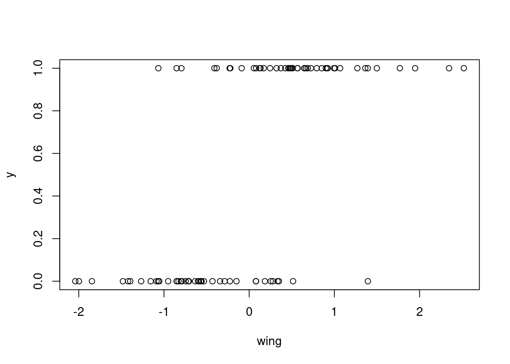
Now we have a simulated dataset in which the response is Bernoulli distributed, and chicks with larger wings seem to have a higher probability of success (i.e. there are more observations of ‘success’ to the right of the graph, and more observations of failure to the left). Let’s fit a generalized linear model with a logit link predicting the probability of success in response to weight using the function glm().
mod1 <- glm(y ~ wing, family = binomial(link="logit"))
summary(mod1)
Call:
glm(formula = y ~ wing, family = binomial(link = "logit"))
Coefficients:
Estimate Std. Error z value Pr(>|z|)
(Intercept) 0.1962 0.2879 0.682 0.496
wing 2.3643 0.4868 4.857 1.19e-06 ***
---
Signif. codes: 0 '***' 0.001 '**' 0.01 '*' 0.05 '.' 0.1 ' ' 1
(Dispersion parameter for binomial family taken to be 1)
Null deviance: 121.584 on 87 degrees of freedom
Residual deviance: 75.481 on 86 degrees of freedom
AIC: 79.481
Number of Fisher Scoring iterations: 5xvals <- seq(-2.5, 2.5, by=0.1)
p1 <- predict(mod1, newdata = data.frame(wing=xvals), type = "response", se.fit = T)
up.ci <- p1$fit + 1.96*p1$se.fit
low.ci <- p1$fit - 1.96*p1$se.fit
plot(y ~ wing)
lines(p1$fit ~ xvals)
polygon(x = c(xvals, rev(xvals)),
y=c(low.ci, rev(up.ci)),
col="#006e6d88", border="#006e6d88")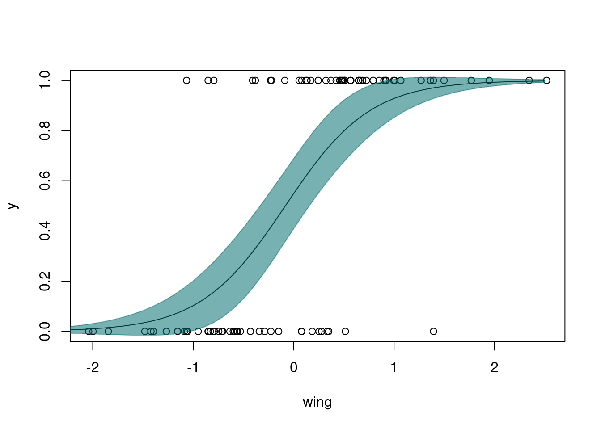

Discrete versus continuous: Do your data only fall into discrete bins, or are any points along the line valid?
Range of support: What are the possible values your data can take? Can you have negative values? Only positive values? Can your data ever include zero? Can you have values above 1?
Skewness: How asymmetric are the data? Is there a long tail in either direction?
Kurtosis: How fat are the tails of the distribution? i.e. how much weight the probability distribution is in the tails?
Remember that the Bernoulli distribution is a special case of the Binomial distribution with only one trial. \(y \sim Bern(p)\). Beyond success/failure, it is useful for a lot of different types of data in ecology. For example, presence or absence of a species at a site (i.e. occurrence), condition when there are only two options (e.g. diseased or not), and anything else that you can imagine coding as 0 or 1.
The Binomial distribution has multiple trials. \(y \sim Binom(N, p)\). For instance, we talked about it earlier in the semester in terms of reproductive success of a breeding pair of guillemots, where the number of trials is equal to the number of chicks that they have attempting to make it to the ocean.
The Poisson distribution describes count data. Because many, many questions in ecology involve counting (e.g. abundance, species richness, number of leaves, etc.) it is a very commonly used distribution and worth getting familiar with.
The Poisson distribution has only one parameter, \(\lambda\), that describes both the mean and the variance. Because there is only one parameter, the variance increases with the mean, i.e. at larger values, the variance also increases.
The values that can be returned from the Poisson distribution are only positive integers (including zero).
The link function typically used for the Poisson distribution is the log, which means that the effects are not additive but instead are multiplicative.
The dataset we will use comes from Adams et al. (2016). Trees as islands: canopy ant species richness increases with the size of liana-free trees in a Neotropical forest. Ecography. The data are publicly available on Dryad at https://doi.org/10.5061/dryad.b34d2. In this study, researchers counted ant species richness in tree crowns on Barro Colorado Island to test the hypotheses that species richness follows the species-area relationship with tree basal area, that this relationship would be less strong in the presence of lianas which serve as connective corridors between different trees, and that overall species richness would be higher in the presence of lianas.
ants <- as.data.frame(readxl::read_xlsx("~/Downloads/Adams+et+al+2016+Ecography.xlsx"))
# Let's rename the columns to be easier to call in the model
ants$tree_size <- ants$`Basal area (cm²)`
ants$scale_tree <- as.numeric(scale(ants$tree_size))
# and let's collapse lianas into a binary, i.e. liana score of 0 versus
# liana score greater than 0
ants$lianas <- as.numeric(ants$`Liana score`>0)
# visualize the data
plot(ants$Richness ~ ants$tree_size)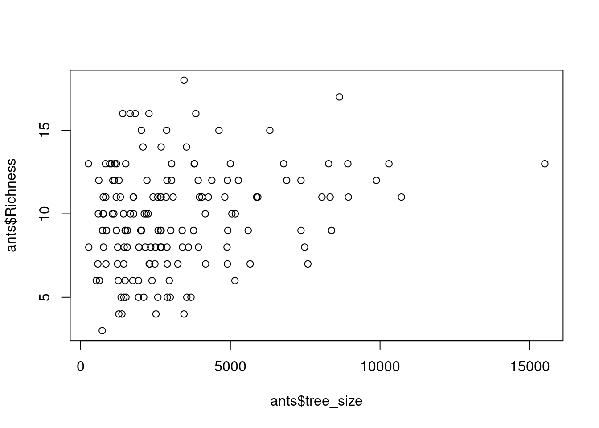
boxplot(ants$Richness ~ ants$lianas)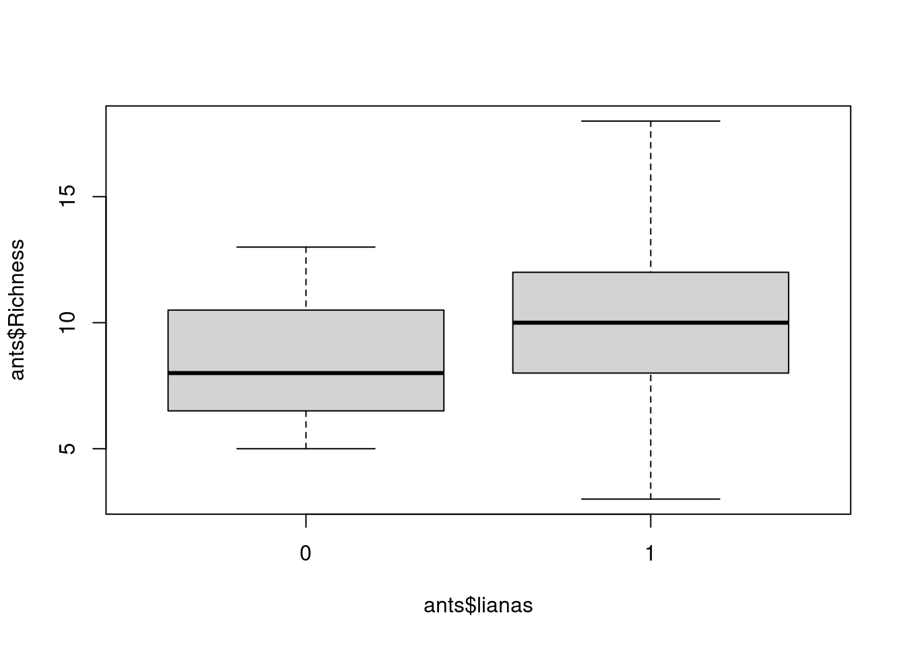
# Let's start by fitting a model with just tree size as a predictor
mod_tree <- glm(Richness ~ tree_size, data=ants, family=poisson(link="log"))Don’t forget that, because of the link function, we cannot simply add up our predictors.
# ant species richness in a tree with a basal area of 5000 cm
rich <- 2.1884 + 0.000027946*5000
# ... that's not right! Need to remember that log(lambda) = b0 + b1*x1
# is the same as lambda = exp(b0 + b1*x1)
exp(rich)[1] 10.25874tree_xvals <- seq(0, 16000, by=1)
pred_tree <- predict(mod_tree,
newdata = data.frame(tree_size=tree_xvals),
se.fit=T, type="response")
up.ci <- pred_tree$fit + 1.96*pred_tree$se.fit
low.ci <- pred_tree$fit - 1.96*pred_tree$se.fit
plot(ants$Richness ~ ants$tree_size,
ylab="Species richness", xlab="Tree basal area",
pch=19, las=1)
lines(pred_tree$fit ~ tree_xvals)
polygon(x = c(tree_xvals, rev(tree_xvals)),
y=c(low.ci, rev(up.ci)),
col="#006e6d88", border="#006e6d88")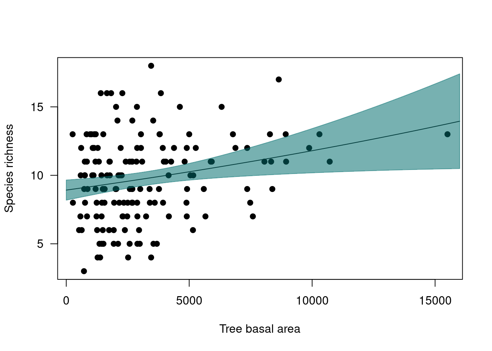
What would have happened if we fit the model as if the residuals were normally distributed?
mod_lm <- lm(Richness ~ tree_size, data=ants)
hist(residuals(mod_lm), 10)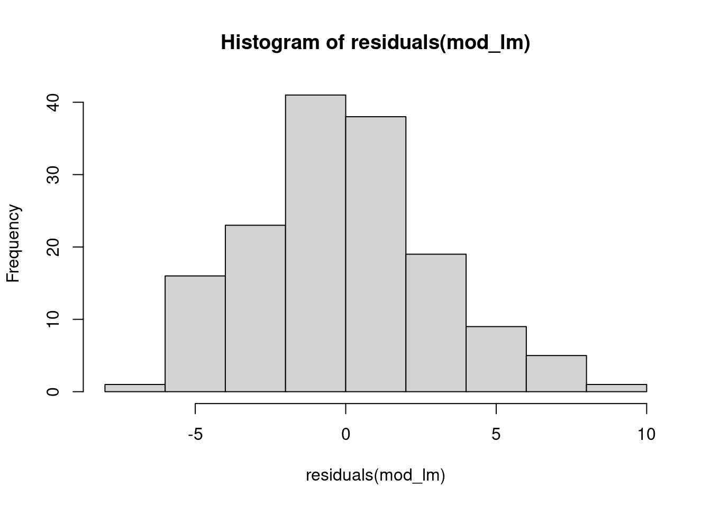
# compare to:
hist(residuals(mod_tree), 10)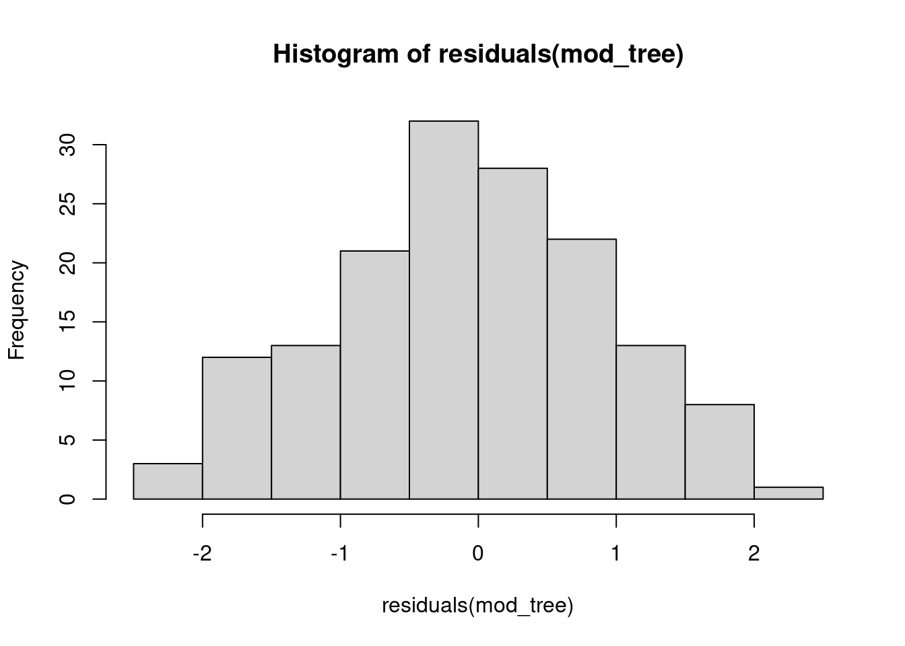
# notice the difference in the y-axis
plot(residuals(mod_lm) ~ predict(mod_lm), ylim=c(-10, 10))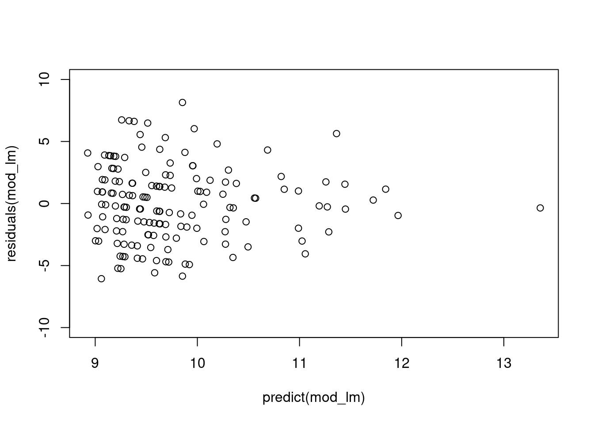
plot(residuals(mod_tree) ~ predict(mod_tree), ylim=c(-10, 10))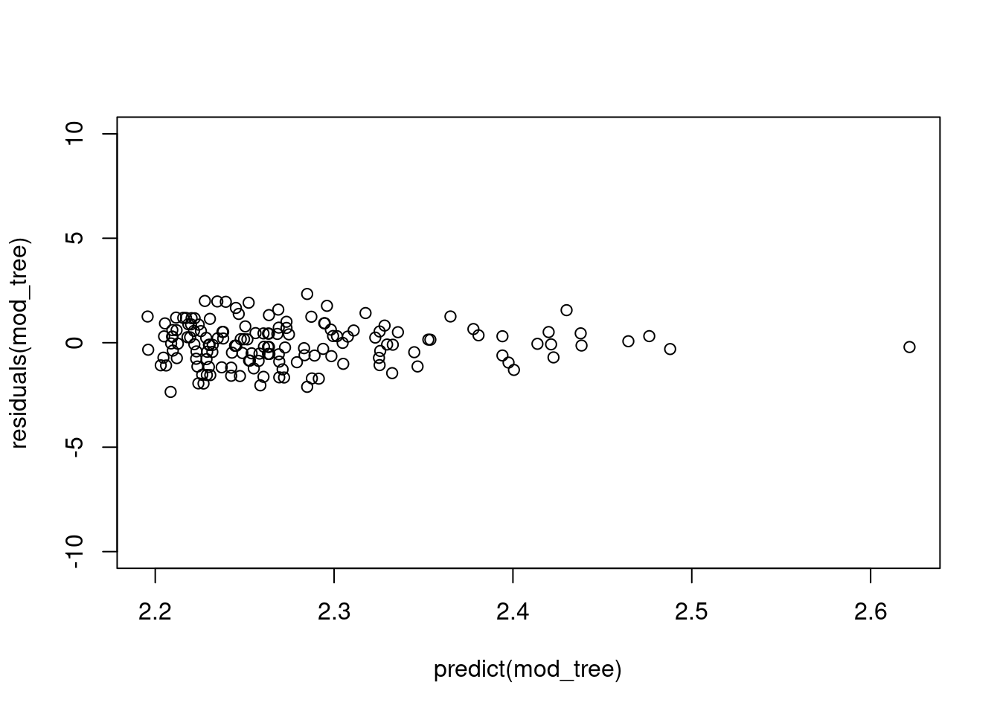
Because generalized linear models are just a more flexible version of the linear models we have already talked about, you can similarly add in other covariates, interactions, etc. Let’s now fit a model that addresses all three of the authors hypotheses combined: the effect of tree size, lianas, and an interaction between lianas and tree size.
mod_full <- glm(Richness ~ tree_size + lianas + lianas*tree_size,
data=ants,
family=poisson(link="log"))Count data can often be overdispersed, meaning that there is more spread or variance than expected. Because variance increases with the mean in the Poisson distribution, at low values, there is low variance. If you are dealing with overdispersed count data, you may want to look into the negative binomial distribution.
hist(rnbinom(n = 10000, size=20, mu=2.2), 20)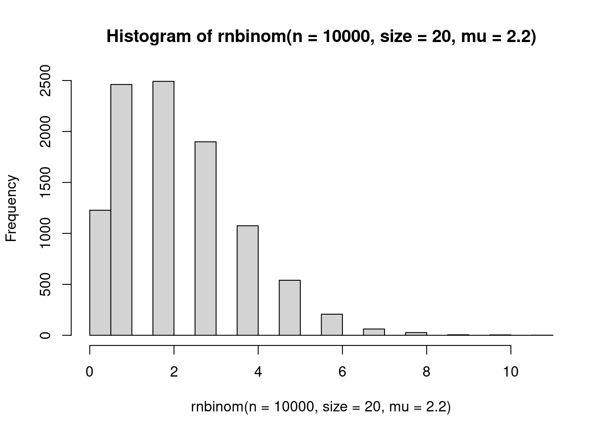
The normal, or Gaussian, distribution is probably the most familiar to people because it is taught in every introductory statistics course. The normal distribution has two parameters: the mean (\(\mu\)) and standard deviation (\(\sigma\)) which is the square root of the variance (\(\sigma^2\)). The support of the normal distribution is all numbers from \(-\infty\) to \(+\infty\).
The log normal distribution is the normal distribution, but log-transformed. It has skewness and the support is all positive real numbers, including zero. It has two parameters, \(\alpha\) which is the mean of the log of the distribution, and \(\beta\) which is the standard deviation of the log of the distribution.
hist(rlnorm(n=10000, meanlog=5, sdlog=.5), 50)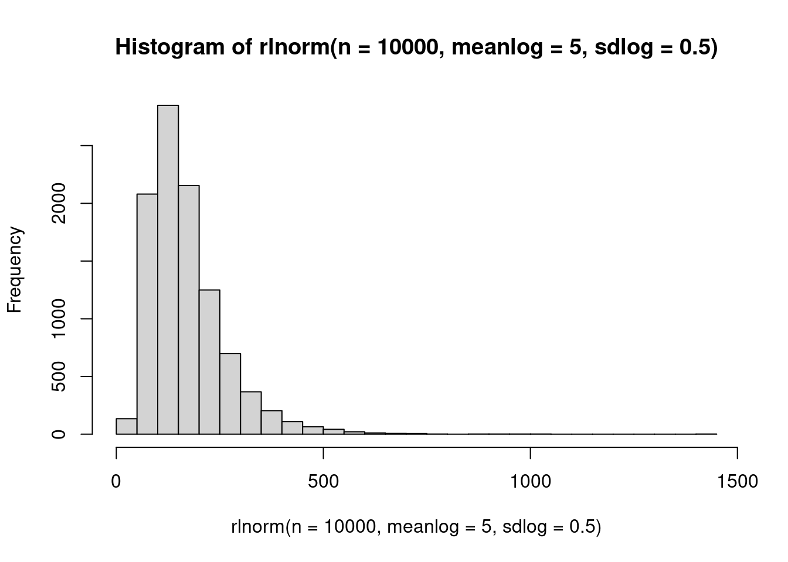
The gamma distribution is super useful in ecology! It is highly, highly skewed at many parameter combinations, and also very flexible. The support is all positive real numbers (excluding zero!). It has two parameters: \(\apha\), which is the shape, and \(\beta\) which is the scale.
hist(rgamma(n=10000, shape=1.2, rate=1))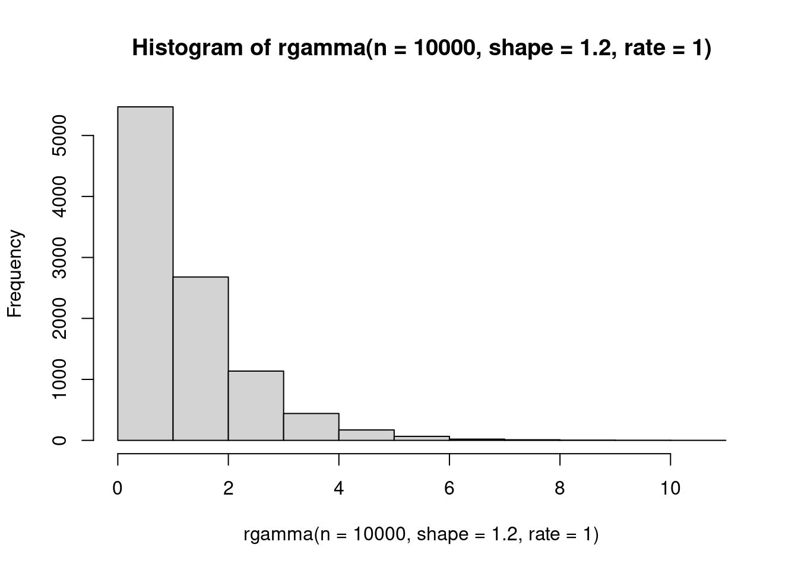
hist(rgamma(n=10000, shape=1.2, rate=.5))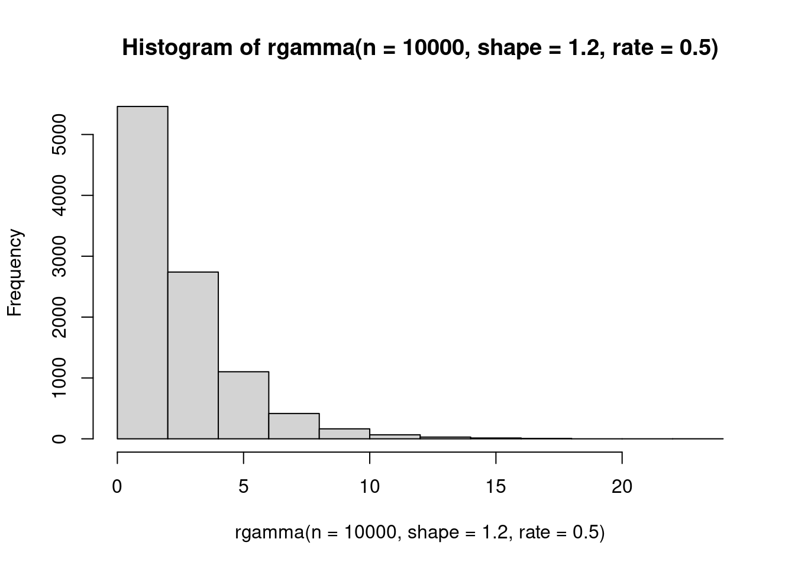
Probability is uniform between the minimum and maximum values. This distribution is not typically used to represent data, but is often a prior (more on that when we get to Bayesian things).
hist(runif(n=1000, min=-5, max=5))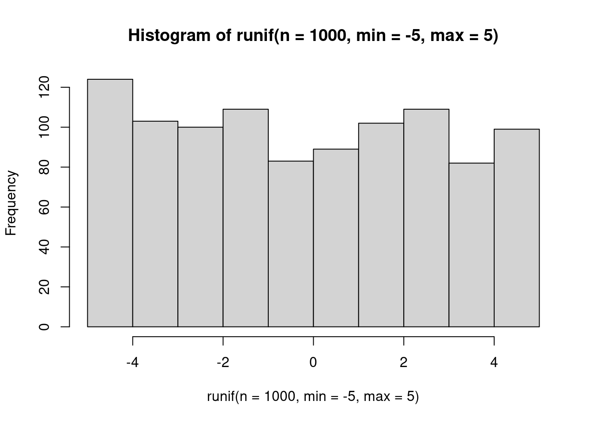
The beta distribution returns numbers between (but not including!) 0 and 1. It is great for modeling probabilities.